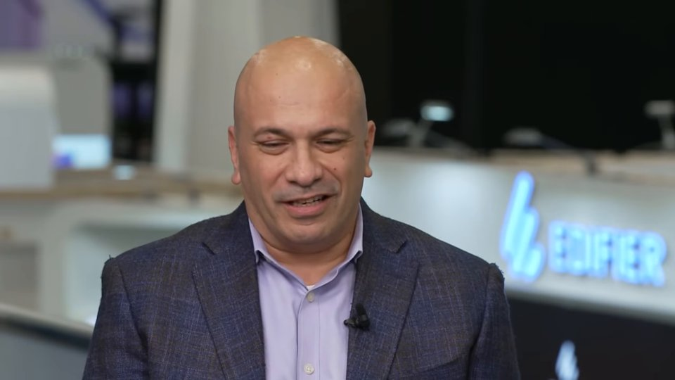
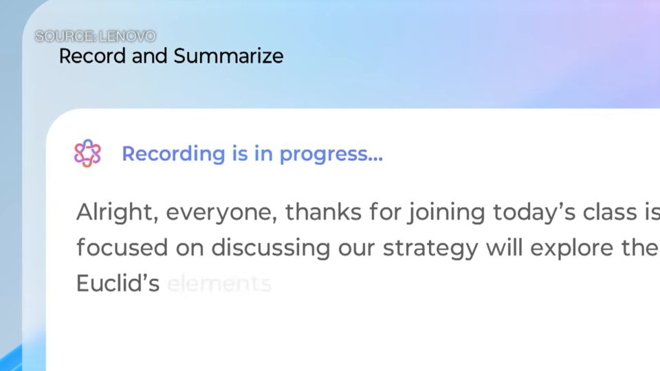
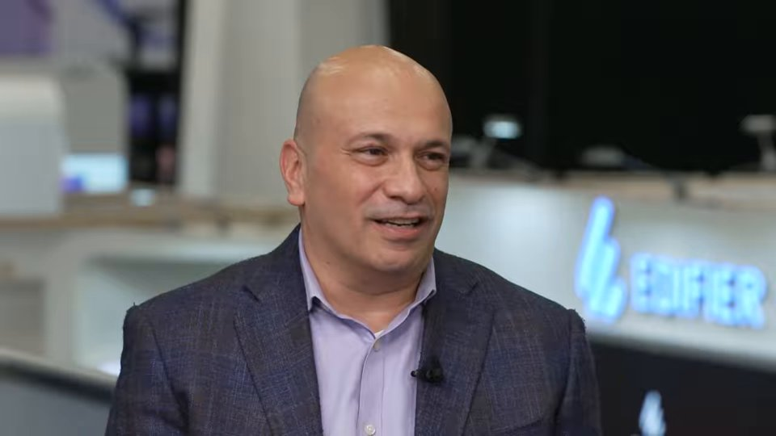
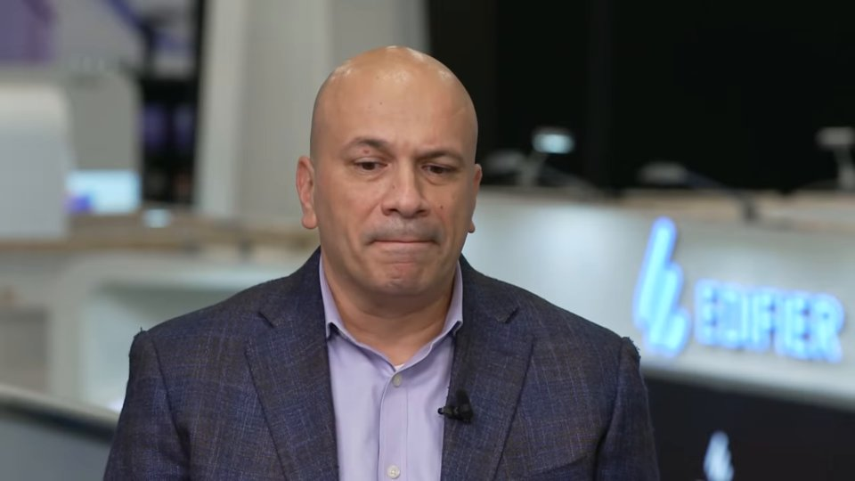
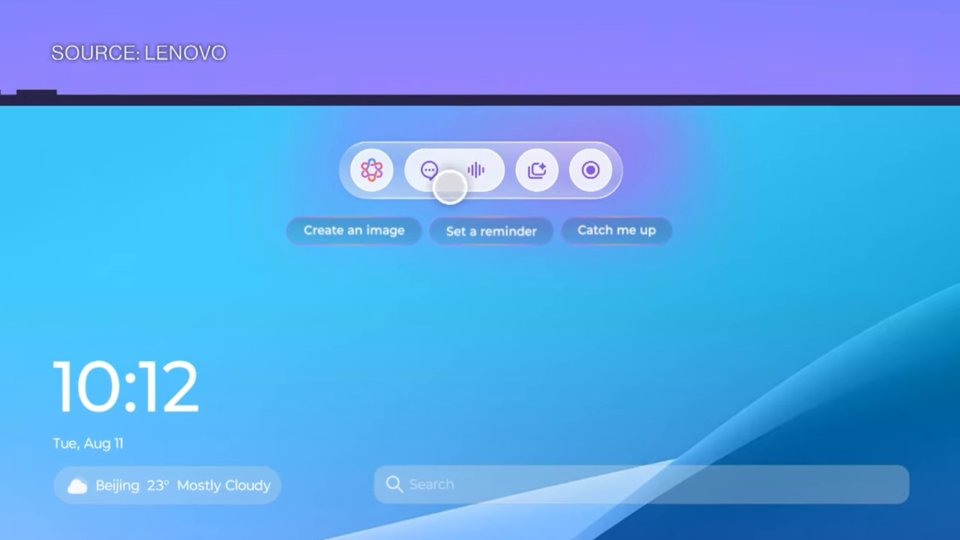
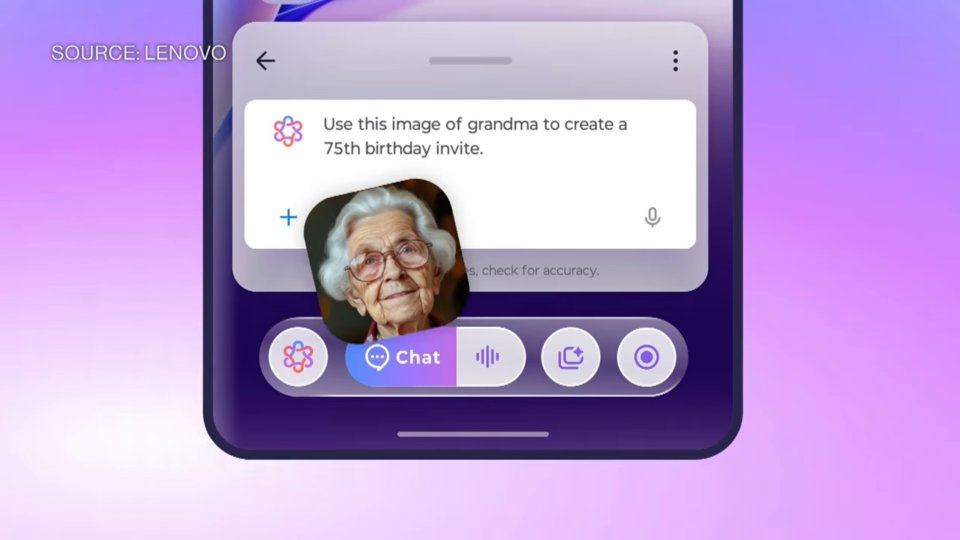
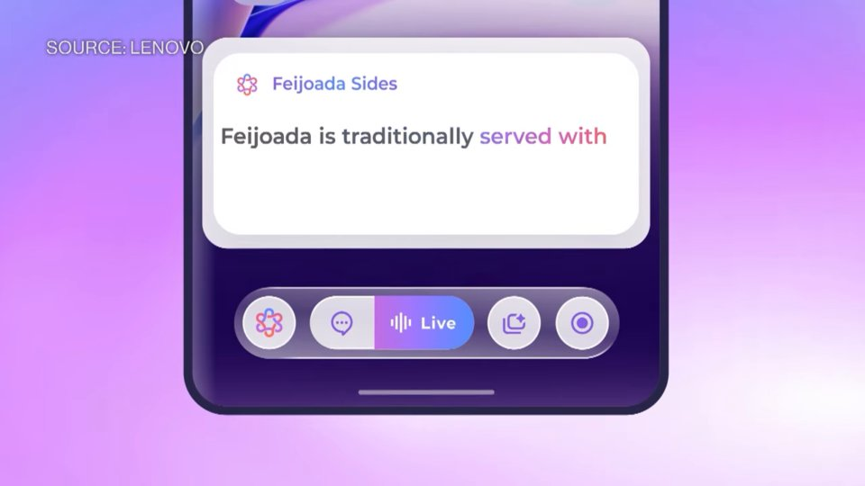
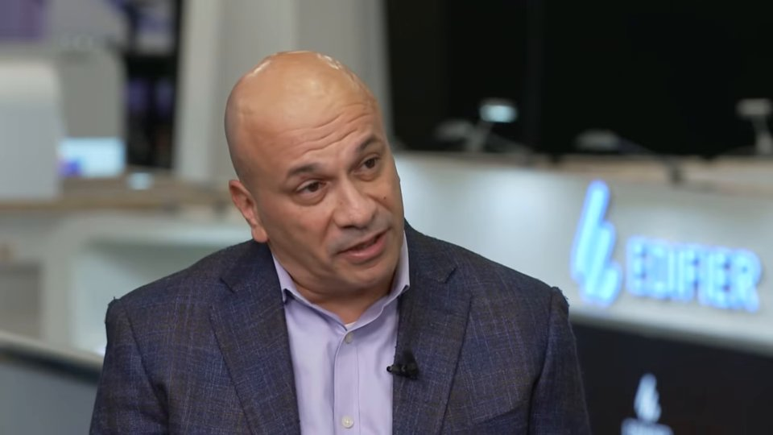
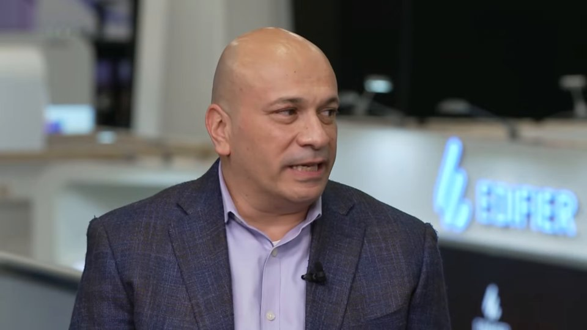
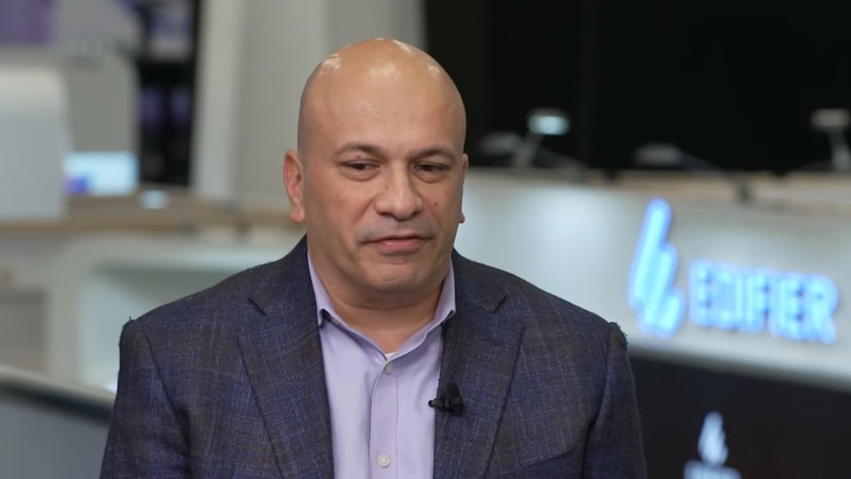

Fallback tape · Lenovo CTO on AI Product Rollout, Vision
Use this if the live microphone path fails on stage.
what is hybrid AI
Opening definition of hybrid AI

#1 0:36 · When we say hybrid AI, we believe in a future where it is an ecosystem of those models, ecosystem of those devices, and ecosystem of those agents that all needs to harmoniously, I #2 1:13 · cloud-based AI solutions. So how does that actually work in practice and how is it technologically feasible as well? Ultimately, we see cloud AI and Edge AI and device AI coexist.

#3 1:23 · cloud-based AI solutions. So how does that actually work in practice and how is it technologically feasible as well? Ultimately, we see cloud AI and Edge AI and device AI coexist.
show me the Motorola products and Kira
Product lineup and Kira ambient AI

#1 2:04 · We're excited about the entire product lineup from our AI PCs, AI tablets as well as our new Motorola line. The most exciting part to me is the Kira integration, the intelligent am

#2 1:38 · in anticipation of the user's intent, the user's need, if you will, and really understand the context. And if you put all of those things together, remembering interactions with yo

#3 2:11 · We're excited about the entire product lineup from our AI PCs, AI tablets as well as our new Motorola line. The most exciting part to me is the Kira integration, the intelligent am
personalized knowledge base on phone tablet and PC
Cross-device UI and knowledge base

#1 2:27 · Think of it as a very user-centric, simple, and single interface. So whether you want to access that through your phone, through your tablet, through your PC, you're essentially in#2 1:38 · in anticipation of the user's intent, the user's need, if you will, and really understand the context. And if you put all of those things together, remembering interactions with yo

#3 2:20 · Think of it as a very user-centric, simple, and single interface. So whether you want to access that through your phone, through your tablet, through your PC, you're essentially in
robotics and cybersecurity research
Emerging tech beyond AI PCs

#1 3:10 · But beyond that, I'm leading up research groups in robotics. So physical and embedded AI is a focus area for us. Cyber security, of course, is a foundational technology for almost #2 0:36 · When we say hybrid AI, we believe in a future where it is an ecosystem of those models, ecosystem of those devices, and ecosystem of those agents that all needs to harmoniously, I

#3 3:02 · But beyond that, I'm leading up research groups in robotics. So physical and embedded AI is a focus area for us. Cyber security, of course, is a foundational technology for almost
agent-native devices voice and gesture interfaces
Horizon / new interaction modalities
#1 2:04 · We're excited about the entire product lineup from our AI PCs, AI tablets as well as our new Motorola line. The most exciting part to me is the Kira integration, the intelligent am

#2 3:58 · traditional devices and traditional interaction modalities to new form factors, maybe more voice based, gesture based, eye gazing based, whatever that is. But at the same time, I t#3 2:11 · We're excited about the entire product lineup from our AI PCs, AI tablets as well as our new Motorola line. The most exciting part to me is the Kira integration, the intelligent am